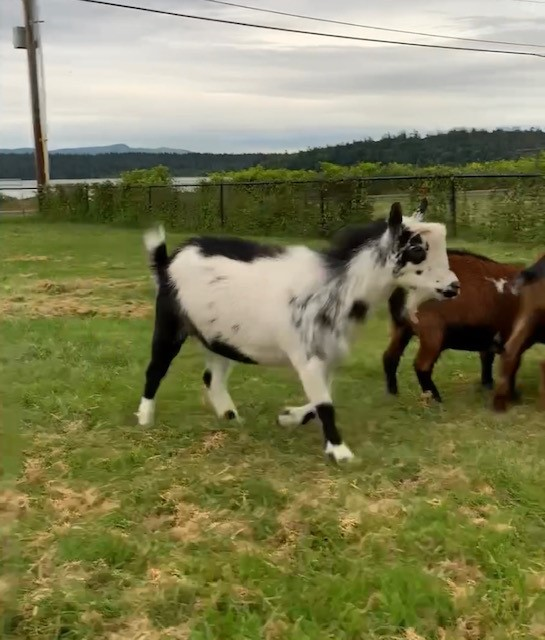

Wynken, Blynken & Nod Poem By: Eugen Field
Wynken, Blynken, and Nod one night Sailed off in a wooden shoe-- Sailed on a river of crystal light, Into a sea of dew. "Where are you going, and what do you wish?" The old moon asked of the three. "We have come to fish for the herring fish That live in this beautiful sea; Nets of silver and gold have we!" Said Wynken, Blynken, And Nod. The old moon laughed and sang a song, As they rocked in the wooden shoe, And the wind that sped them all night long Ruffled the waves of dew. The little stars were the herring fish That lived in that beautiful sea-- "Now cast your nets wherever you wish-- Never afeard are we!" So cried the stars to the fishermen three: Wynken, Blynken, And Nod. All night long their nets they threw To the stars in the twinkling foam--- Then down from the skies came the wooden shoe, Bringing the fishermen home; 'T was all so pretty a sail it seemed As if it could not be, And some folks thought 't was a dream they 'd dreamed Of sailing that beautiful sea--- But I shall name you the fishermen three: Wynken, Blynken, And Nod. Wynken and Blynken are two little eyes, And Nod is a little head, And the wooden shoe that sailed the skies Is a wee one's trundle-bed. So shut your eyes while mother sings Of wonderful sights that be, And you shall see the beautiful things As you rock in the misty sea, Where the old shoe rocked the fishermen three: Wynken, Blynken, And Nod.